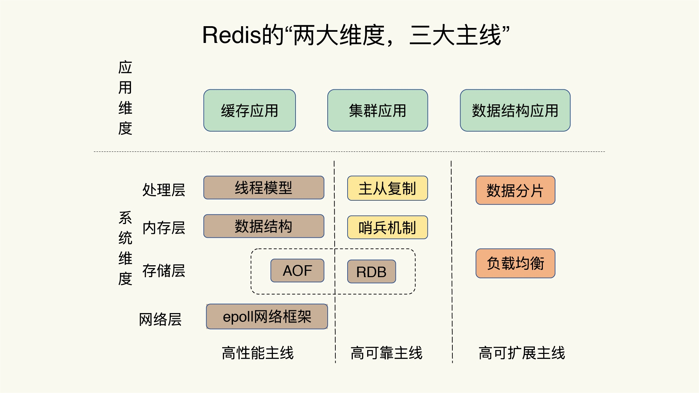
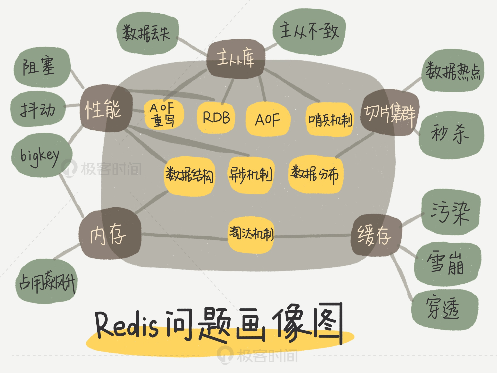
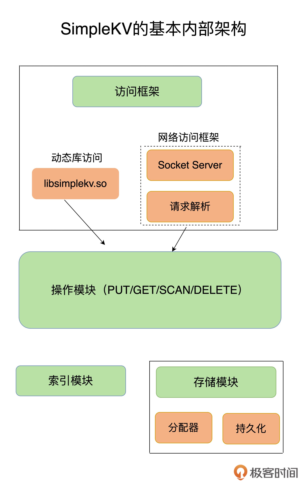
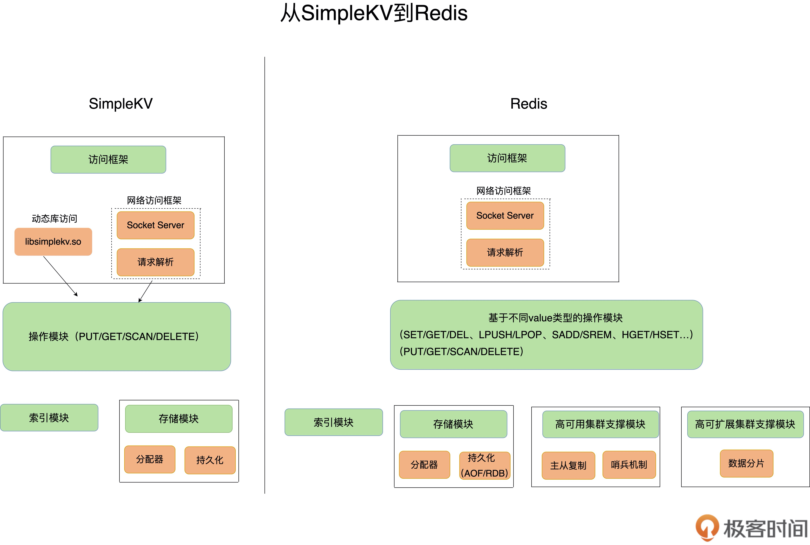
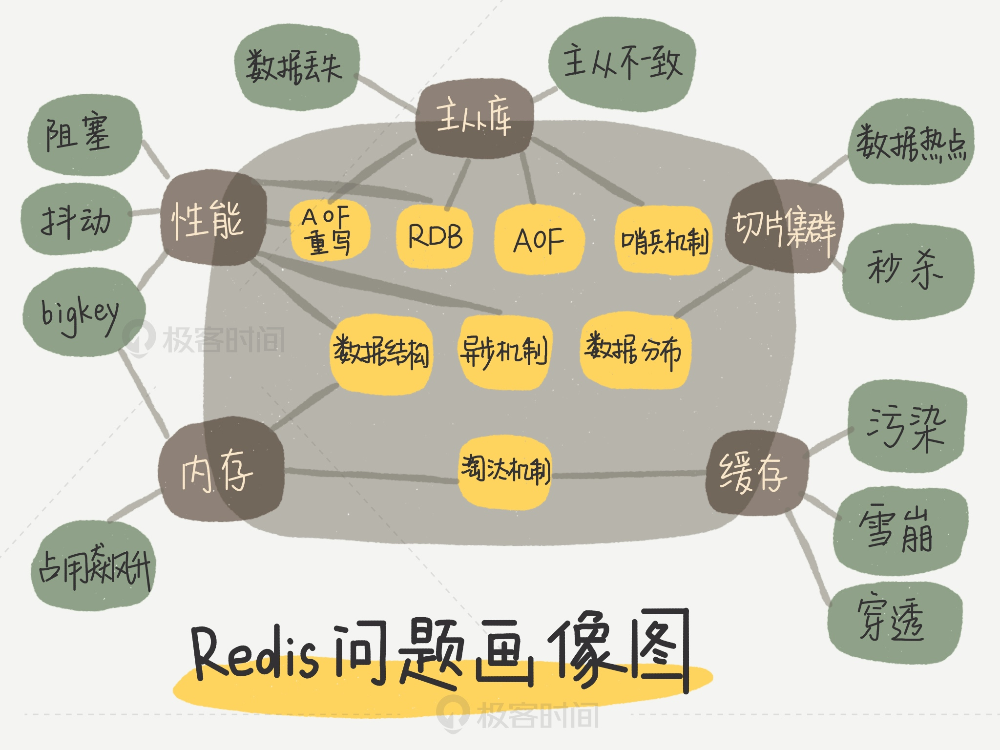
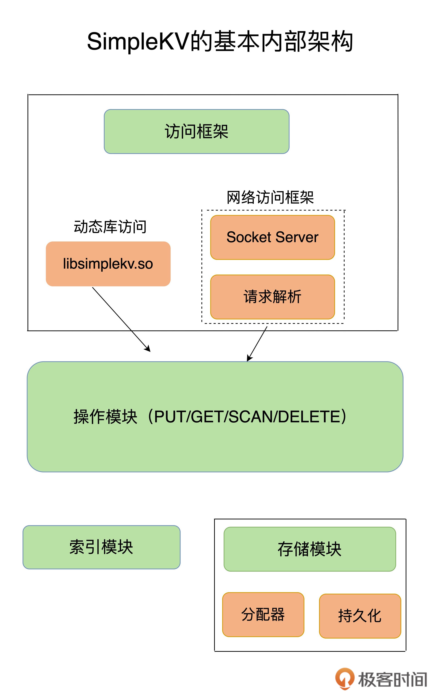
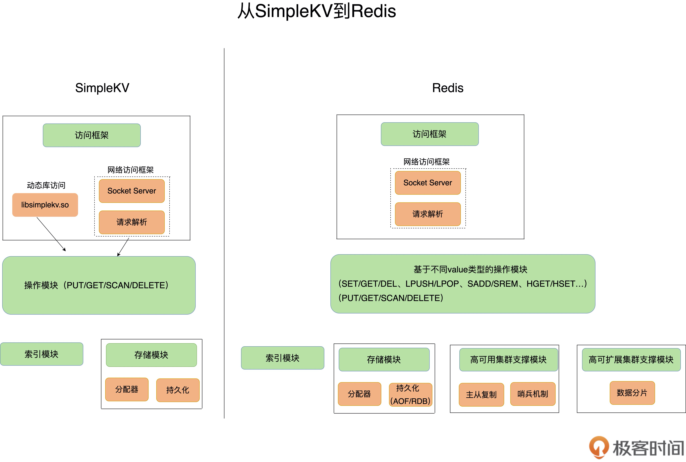

基础架构
知识全景图
- 
三条主线
- 高性能主线，包括线程模型、数据结构、持久化、网络框架；
- 高可靠主线，包括主从复制、哨兵机制；
- 高可扩展主线，包括数据分片、负载均衡。
问题画像图

简单的kv结构图

reis和simplekv对比


生命的意义是成为你自己！




SUBSCRIBE +odown 所有实例进入客观下线状态的事件

Redis Cluster 方案通过哈希槽的方式把键值对分配到不同的实例上，这个过程需要对键值对的 key 做 CRC 计算，然后再和哈希槽做映射，这样做有什么好处吗？
1.让key在多个实例上分布更均匀
2.需要rehash的时候，还要去修改这个对应关系表，代价有点大
3.存在表里，key的数量太大，表的维护是个问题